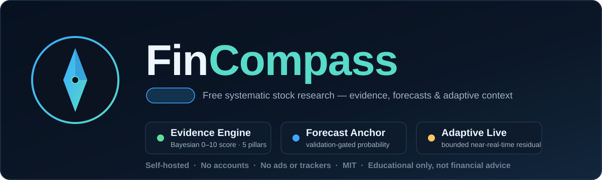
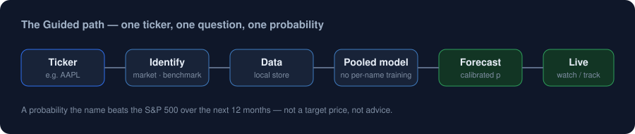

A local research workbench for one honest question:
Over the next year, how likely is this company to do better than the S&P 500?
It runs on your machine — no account, no subscription, no ad network, no cloud model API. A Forecast is a calibrated probability for that exact event. It is not a target price, expected return, or advice to buy or sell.
▶ Try it in your browser — no install
The full app runs in your browser — the probabilistic Forecast plus DCF, options, bonds, portfolio and the glossary — all client-side, free. The Forecast needs a free one-time data-source setup; the desktop app below needs none.

Download
Pick your platform. The app opens in your browser at http://127.0.0.1:8000/; your data stays on your machine.
Every package is attached to the latest release (currently v2.1.0).
Install & run
Windows
Unzip FinCompass-windows.zip and run FinCompass.exe. Windowed, no console; SmartScreen may warn on first run — choose More info → Run anyway.
macOS
Unzip FinCompass-macos.zip and open FinCompass.app. If Gatekeeper warns, right-click → Open once.
Linux
tar -xzf FinCompass-linux.tar.gz then ./FinCompass.
Prefer source? pip install -r requirements.txt then uvicorn api:app --host 127.0.0.1 --port 8000.
What you get
Guided
Ticker in, a plain percent out, and a practical posture — Don't decide, Watch, DCA a little, Hold, Trim. Answer first, visual second, jargon never.
Research
The same number as a specification: target event, model family, calibration and discrimination scores, evidence tier, manifest and hashes.
Why this result?
Every Forecast explains why its model family was chosen — instrument, horizon, benchmark, evidence tier, applicability — and, when none applies, exactly which condition failed.
Evidence export
One click downloads a self-contained evidence report — target, probability and uncertainty, validation, provenance, training window, reproducibility hashes — no private data.
Analytics desks
Three-stage DCF with a reverse-DCF "market-implied growth", ratios, options (real chains, Greeks), bonds (Treasury curve), portfolio, performance and risk — plain-language first.
Nothing unexplained
A searchable Glossary & Reference of 70+ terms feeds a tooltip on every metric; each calculator states its data source and assumptions in full.
Honest by design
A Limited-evidence model may only be watched. The posture never changes the probability, never says "buy all", never auto-sizes a position, and uses no cloud model.
Runs on your machine
No account, no subscription, no ad network, no cloud API. Your watchlist, settings, prices and any models you build stay local and survive upgrades.